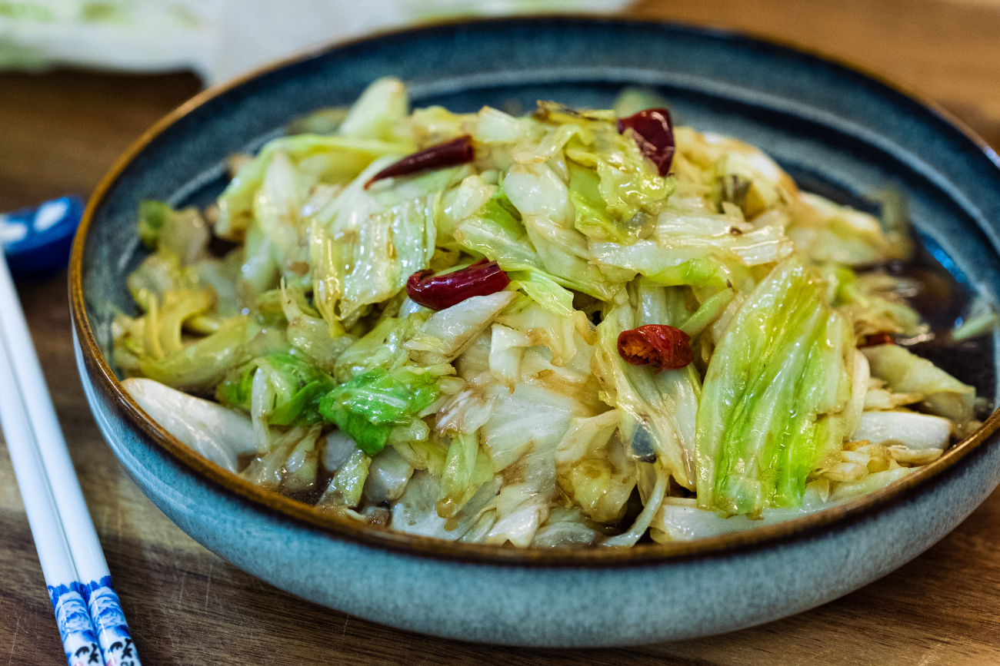

Sitr-Fry Hand-Torn Cabbage

Description
One of the most popular cabbage recipe in china – that will be Shou Si Bao Cai (手撕包菜). Bao cai is cabbage；shousi means ripped apart by hand which I will explain later. This is literally just stir fry cabbage but it is so basic and popular that if you ask any Chinese, they will know about this dish, period.
Ingredients
- 1.4 lb (640g) of Cabbage
- 1.5 Tbs of Black Vinegar
- 8-10 Dried Red Chilies
- 4 Cloves of Garlic (Slice Thinly)
- 1 Tbs of Salt
- 2 Tbs of Soy Sauce
- 2-3 Tbs of Vegetable Oil to Stir Fry
Steps
- Cut the cabbage in half. Remove the hard center stem. Tear the cabbage into small sizes. If the cabbage is too solid to break apart by hand, you can cut it with a knife instead.
- Thinly slice a few cloves of garlic
- Cut 8-10 pieces of red dried chilies into half-inch long pieces. Remove the seeds and set it aside.
- Add some vegetable oil to a heated wok. Toss in the cabbage along with the garlic and dried chilies. Stir over high heat for a couple of minutes or until the cabbage is welted down.
- Add 2 tsp of soy sauce, 1 tsp of salt or to taste, and 1 tbsp of Chinese black vinegar. Continue to stir for a minute. Turn off the heat. Before serving, add the remaining black vinegar and mix. This will stabilize the flavor Because the vinegar we add before evaporated a little bit during cooking.